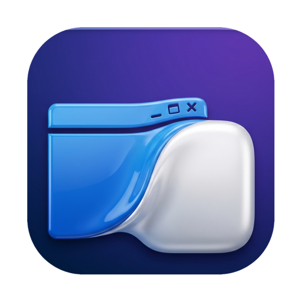

Drag a Windows .exe onto MacWrap and get a real .app back, its own icon, double-click to launch, no terminal, no setup. You'd never know there's Windows underneath.
Free beta · Apple Silicon · Bring your own software. MacWrap wraps the apps you already own.
Any Windows installer, program or game. MacWrap analyzes it instantly.
MacWrap test-runs the app, matches what fails against its fix library, and applies the right recipe automatically, no manual tweaking.
A real Mac app with the original icon. Double-click to play. Done.
A plain Wine wrapper leaves you googling cryptic errors. MacWrap ships a curated library of real fixes, discovered by hand reverse-engineering hundreds of apps and games on Apple Silicon. It test-runs your app, recognizes the failure, and applies the exact fix, automatically. No tweaking, no guessing.
MacWrap runs the app, captures the exact error, and matches it against a curated library of known problems: missing runtimes, graphics init, fullscreen crashes, the Steam overlay, intro-video freezes and more.
For each known failure MacWrap knows the real fix, forcing D3D11, a patched Wine graphics stack, a virtual desktop, disabling the overlay, and applies it to your app with no manual steps.
The fix catalog updates over the air. When we crack a new app, that recipe reaches every user automatically, for free. The library only gets bigger.
No compatibility layer runs everything, and anyone who says otherwise is lying. MacWrap analyzes each app and tells you which tier it lands in, up front.
And when an app runs great here but also has a paid native Mac version (like Mp3tag), we tell you. The free Windows one still runs under MacWrap, but you deserve to know the native option exists.
Modern DX11/DX12 titles via Apple's Metal translation, rendering and playing on Apple Silicon.
Classic 32-bit DirectX 9 games and WoW private servers, running thanks to a Wine fix we built ourselves for Apple Silicon that even other free layers can't match.
Connect Steam and wrap each game into its own app, with the right settings applied per game automatically. Steam runs quietly behind it.
Windows-only charting, trading and legacy .NET + Access business suites with no Mac version, running natively-wrapped, charts and all.
Everyday Windows-only tools, one drag away.
Connect your Epic account and MacWrap brings your games to Mac, including Epic's free weekly AAA giveaways. It downloads the Windows version and wraps it into a playable app, powered by Apple's Game Porting Toolkit. Single-player DX11/DX12 titles play; online anti-cheat games don't, and we flag those before you download a single byte.
The Witcher 3, Hogwarts Legacy, GTA V (story), A Plague Tale… DX11/12 titles without anti-cheat.
Claim Epic's free games each week and play them on your Mac, at no extra cost.
Fortnite and online anti-cheat titles show a clear "Not playable", we never waste your bandwidth.
No Parallels boot screen, no Windows desktop, no per-app guesswork. Each app becomes its own native bundle. And our compatibility engine is built on a patched, hardware-accelerated graphics stack we built ourselves, so things work that other layers can't.
Free to wrap your own apps: no subscription, nothing locked, ever. Apple Silicon Mac required.
First launch: macOS may say it "cannot verify MacWrap is free of malware." That is expected, MacWrap is not notarized by Apple yet (that costs a yearly fee I will pay once the project grows), not a sign anything is wrong. Right-click the app → Open. If it still won't open, go to System Settings → Privacy & Security and click "Open Anyway." You only do this once. · Help
Want updates & new recipes in your inbox?
Don't see your program? Tell us. Every request helps us prioritize the next recipe, and we'll email you if we get it running.
MacWrap is free to use and built by a single person. Every recipe, making a stubborn Windows app finally run on Mac, is hours of deep work. If MacWrap saved you from buying a Windows PC or a pricey VM, a small donation keeps the lights on and the next app coming.
100% optional, only if MacWrap actually works for you. It stays free either way. Thank you for backing an indie project. 🙏
Practical, no-hype guides on how to run Windows programs, open .exe files, and play Windows games on Apple Silicon Macs, and how MacWrap turns each one into a native app.
Boot Camp vs Parallels vs CrossOver vs MacWrap, every option compared for Apple Silicon, plus a step-by-step.
Why macOS can't run Windows executables, and the lightweight free way to open any .exe.
Game Porting Toolkit + D3DMetal: which games work, which don't (anti-cheat), and how to wrap one.